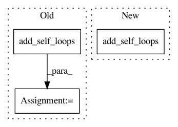

af83e4b143f235d5c41acd80da71c7a20bb8a076,torch_geometric/nn/conv/feast_conv.py,FeaStConv,forward,#FeaStConv#Any#Any#,66
Before Change
if isinstance(edge_index, Tensor):
edge_index, _ = remove_self_loops(edge_index)
num_nodes = x[1].size(0)
edge_index, _ = add_self_loops(edge_index, num_nodes=num_nodes)
elif isinstance(edge_index, SparseTensor):
edge_index = set_diag(edge_index)
// propagate_type: (x: PairTensor)
After Change
if self.add_self_loops:
if isinstance(edge_index, Tensor):
edge_index, _ = remove_self_loops(edge_index)
edge_index, _ = add_self_loops(edge_index,
num_nodes=x[1].size(0))
elif isinstance(edge_index, SparseTensor):
edge_index = set_diag(edge_index)
// propagate_type: (x: PairTensor)
In pattern: SUPERPATTERN
Frequency: 3
Non-data size: 3
Instances
Project Name: rusty1s/pytorch_geometric
Commit Name: af83e4b143f235d5c41acd80da71c7a20bb8a076
Time: 2020-06-19
Author: matthias.fey@tu-dortmund.de
File Name: torch_geometric/nn/conv/feast_conv.py
Class Name: FeaStConv
Method Name: forward
Project Name: rusty1s/pytorch_geometric
Commit Name: a3a05105f0a696a99f0b65384f9bed8e8702256f
Time: 2018-04-18
Author: matthias.fey@tu-dortmund.de
File Name: test/utils/test_loop.py
Class Name:
Method Name: test_add_self_loops
Project Name: rusty1s/pytorch_geometric
Commit Name: b9c72612cf6c6e8b13de053fa54b79c52c8b0c21
Time: 2018-08-13
Author: matthias.fey@tu-dortmund.de
File Name: torch_geometric/transforms/add_self_loops.py
Class Name: AddSelfLoops
Method Name: __call__